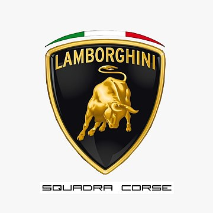

V nasprotju z večino proizvajalcev športnih avtomobilov, ki jim tekmovanja predstavljajo odlično promocijsko sredstvo, Lamborghini Automobili dolgo časa ni neposredno sodeloval na nobenem športnem dogodku; to izbiro so določili tako visoki stroški, potrebni za te dejavnosti, kot tudi natančna podjetniška vizija njenega ustanovitelja Ferruccia Lamborghinija, za katerega dirkanje ni bilo v skladu s podobo praktičnih in udobnih avtomobilov, čeprav izjemno hitrih, ki jih je nameraval zgraditi . Miura je bila ustvarjena z značilnostmi dirkalnika prilagojenega za vsakdanjo rabo. Njen tehnik Dallara pa je znamko zapustil ravno zato, da bi sledil svetu avtomobilnih dirk, preko DeTomasove ponudbe za vodenje njegove nove ekipe Formule 1.
Več kot 20 let so bile edine priložnosti za ogled avtomobilov Lamborghinijeve znamke na dirkališču posledica osebne pobude strank Lamborghinija, ki so zasebno tekmovale s svojimi kupljenimi osebnimi avtomobili. Eden od teh je bil Paul Rilly. Avtomobil Islero francoskega voznika je bil prvi Lamborghini, ki se je leta 1973 prijavil in kvalificiral za znamenito dirko 24 ur Le Mansa, vendar zaradi ene same epizode ni dirkal. Na kvalifikaciji Rilly ni prevozil dovolj hiter krog kvalifikacije, vendar je bil ponovno sprejet na dirko zaradi nekaterih kazni, ki so jih prejeli nekateri vozniki, ki so bili pred njim. Na žalost je novica prispela, ko je Rilly že zapustil dirkališče in ker je bil na cesti, mu tega ni bilo mogoče sporočiti